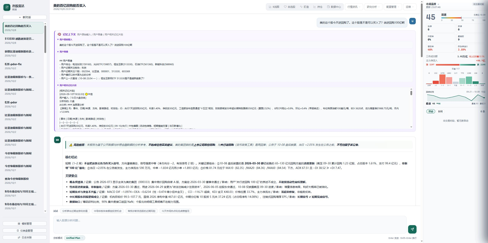
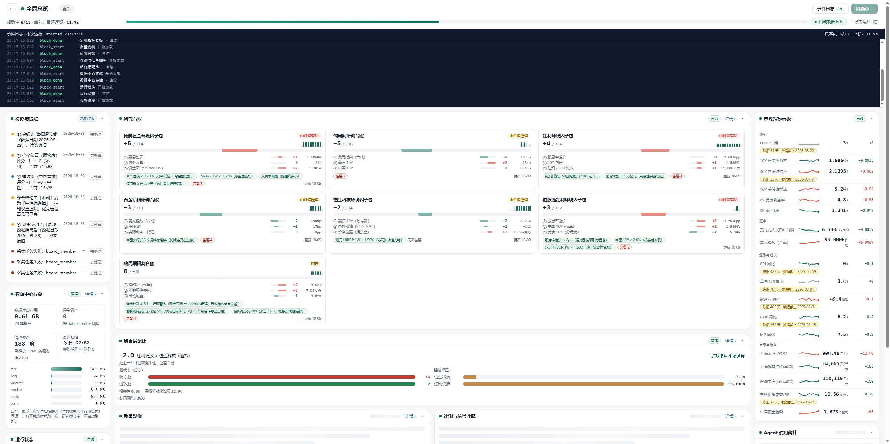
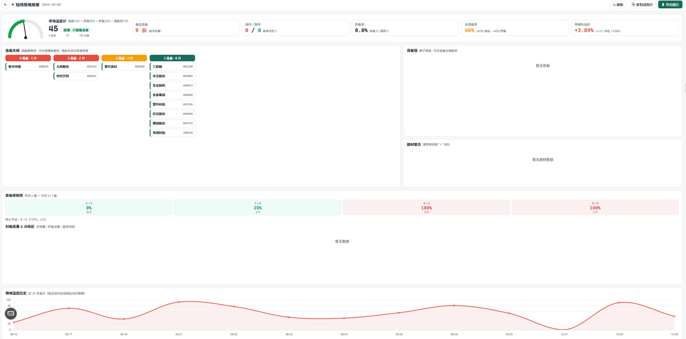
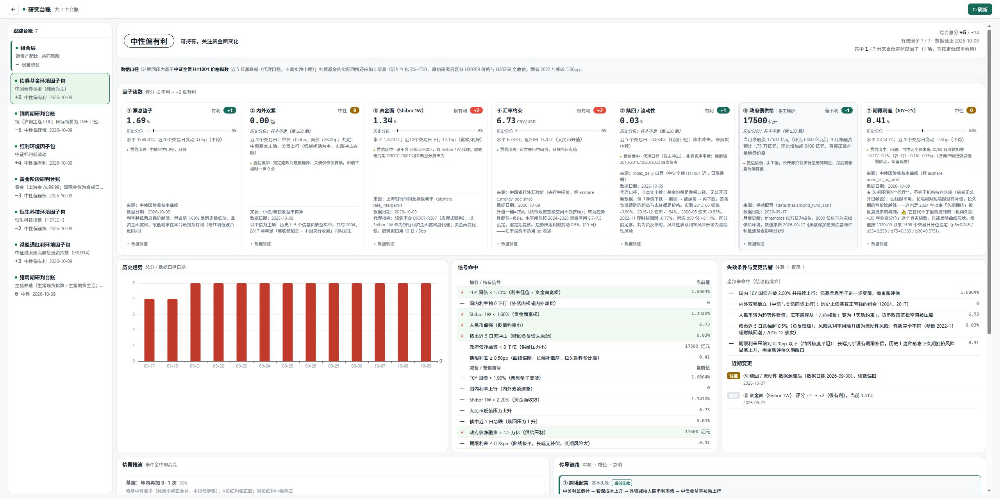
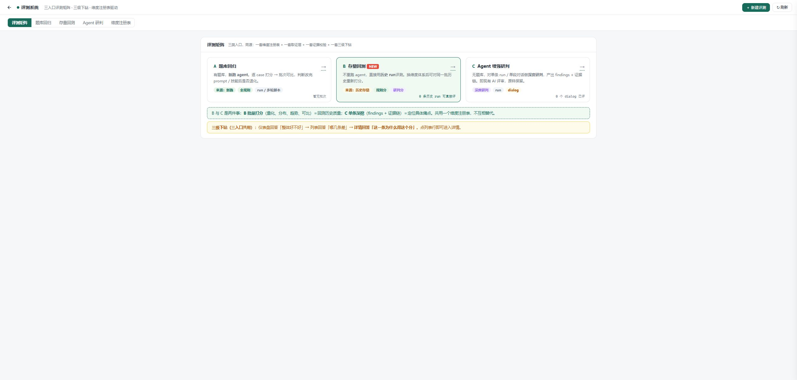
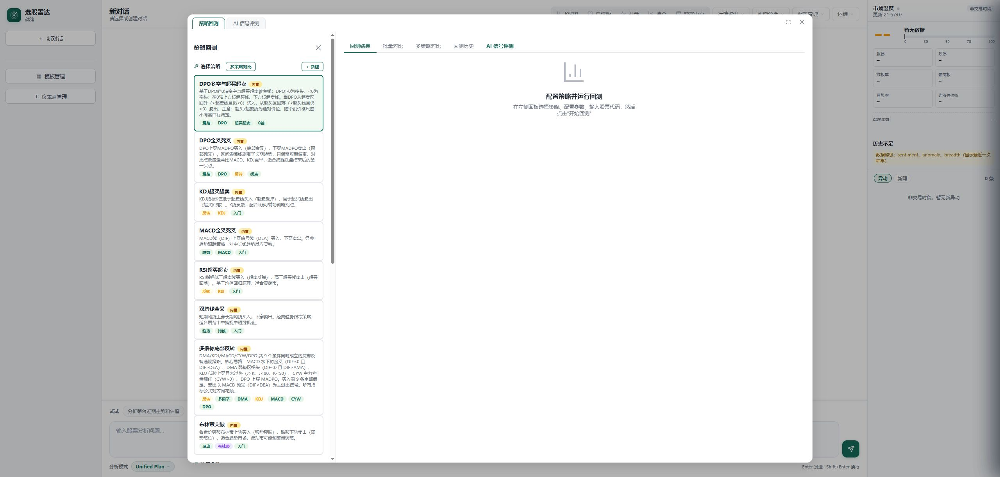

结论可验证 · 过程可回溯 · 策略可复盘
基于 LLM + LangGraph 的 A 股智能分析 Agent —— v2.1 发布介绍
Agenda · 发布导览
六屏产品实拍：对话分析、全局总览、短线情绪、研究台账、评测系统、策略回测。全部来自真实运行的 Web 工作台。
研究台账、策略研发闭环、评估与对话评审——围绕「研究 → 策略 → 评估」构建完整闭环。
技能 12 → 19，报告模板 21 → 24，仪表盘 7 → 10，新增 203 个测试文件。数字说话。
一条命令启动 Web 工作台。开源、可复现、可二次开发。
Act 01
以下六屏全部来自正在运行的产品本体 —— 你看到的每一个数字，都是它此刻真实的输出。
Live 01 · 对话分析
中文提问即可发起完整分析：Agent 自动选择技能、调度数据源、执行推理，右侧实时展示执行链。模糊需求会先澄清再动手，长任务可随时停止。

Live 02 · v2.1 新增
市场情绪、资金链路、宽基估值、Agent 效果统计与事件日志同屏汇聚，自动刷新待命。

Live 03 · v2.1 新增
情绪周期、连板梯队、炸板率、北向资金、赚钱效应……短线选手最关心的情绪指标，聚合一屏实时呈现。

Live 04 · v2.1 新增
黄金、铜、生猪、债券、红利、恒生科技……每类资产的研判台账持续跟踪，信号逐条对照数据验证，研究过程可积累、可回看。

Live 05 · v2.1 新增
三入口评测矩阵：描述级 / 分解级 / Agent 级逐层下钻，维度注册表驱动评分。Agent 回答得好不好，从此有据可依。

Live 06 · v2.1 新增
内置 6 套经典策略模板，支持批量对比、多周期验证、参数优化与 AI 智能调参。策略构思 → 回测 → 评估 → 迭代，一条链路走完。

Act 02
能力面、内容面、工程面，三条线同时跃迁。
By the Numbers · 更新幅度
新增 eval / thesis / crowding / signal_eval 四个顶层包 —— 评测、台账、拥挤度观测、信号评估能力一并开源。
stock_query + technical_analysis + risk_metrics 合并为 stock_analysis，一次分析给出完整的个股画像。
Experience · 交互升级
需求模糊时主动澄清，而不是硬猜。理解对了，分析才对。
长任务可随时中断，预算可控、节奏由你。
think / 工具节点全程可回溯，回答溯源 · 执行归因。
结论逐级下钻到数据与推理依据，让「可验证」落到实处。
git clone → pip install → python -m server
github.com/wode98k233/stock_agent · GPL-3.0 · 仅供学习研究，不构成投资建议